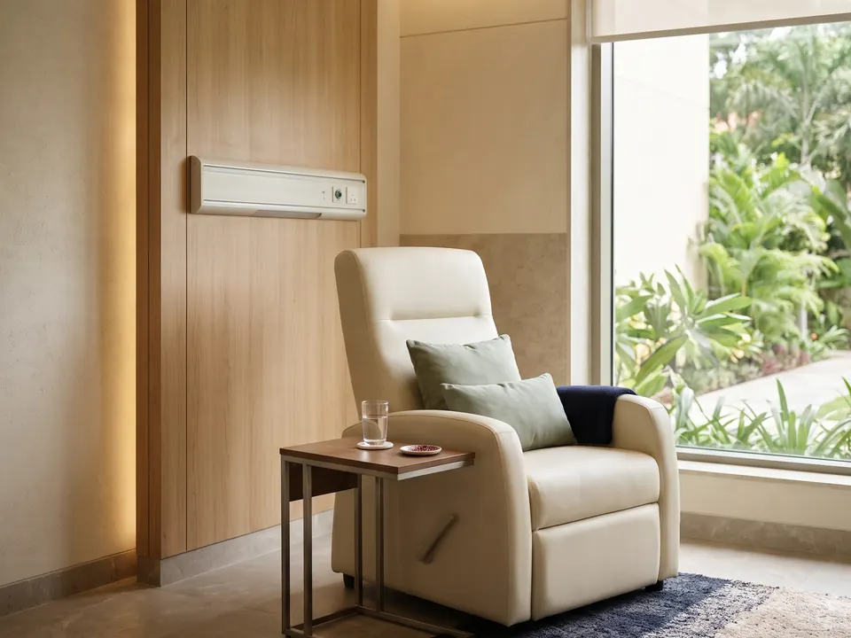

Multi-specialty hospitals
Full-service hospitals that bring many specialities, diagnostics and critical care under one roof.
Home What we do
White Sage builds new hospitals, takes over and revives existing ones, and advises healthcare providers. Here is how each kind of work goes.
Focus area 1 of 3
From a site and an idea to a hospital that opens its doors.
White Sage develops new healthcare facilities from scratch and handles every part of the work, from strategic planning and design to construction and launch. It works with experienced hospital architects and construction experts so that each new hospital is planned for good care and efficient running from day one.

Focus area 2 of 3
New life for hospitals that are underperforming or out of date.
White Sage takes over and transforms hospitals that are underperforming or outdated. The work starts with a full assessment, then makes planned improvements to operations, infrastructure and patient care, bringing the hospital up to modern standards.

Focus area 3 of 3
Senior advice for healthcare providers, at any stage.
White Sage advises healthcare providers on strategic planning, operational management and analysis. With a network of specialists it offers joined-up help at every stage, from design to growth.

Who we work with
White Sage develops and manages multi-specialty hospitals, single-specialty facilities focused on cancer care and women's health, and medical colleges.
Full-service hospitals that bring many specialities, diagnostics and critical care under one roof.

Focused centres, with cancer care and women's health as the two areas White Sage concentrates on.
Teaching institutions, planned and run alongside the hospitals where their students train.
Tell us where things stand today. A senior member of the team will get back to you, usually within 24 hours.